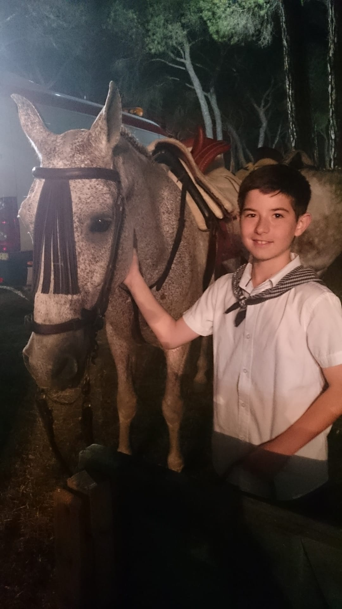
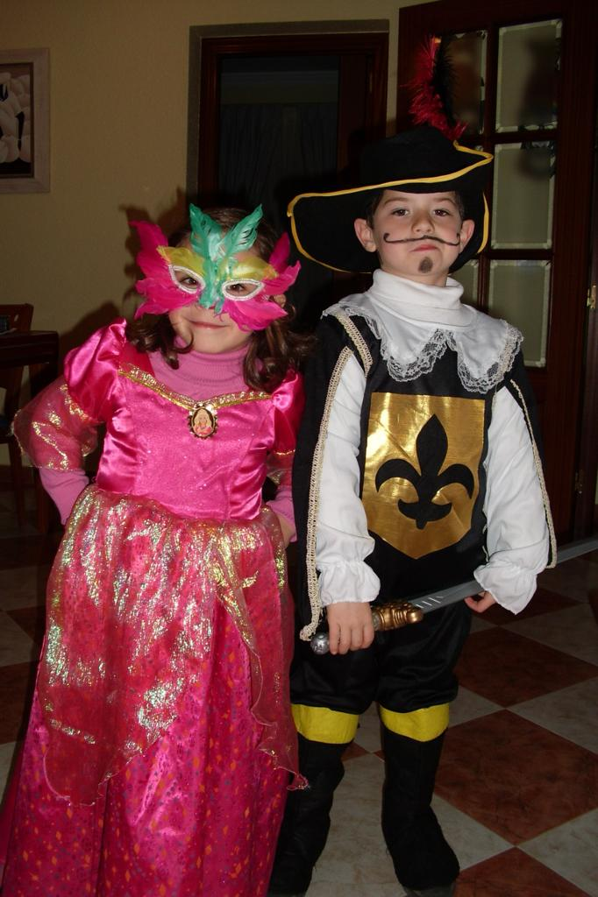
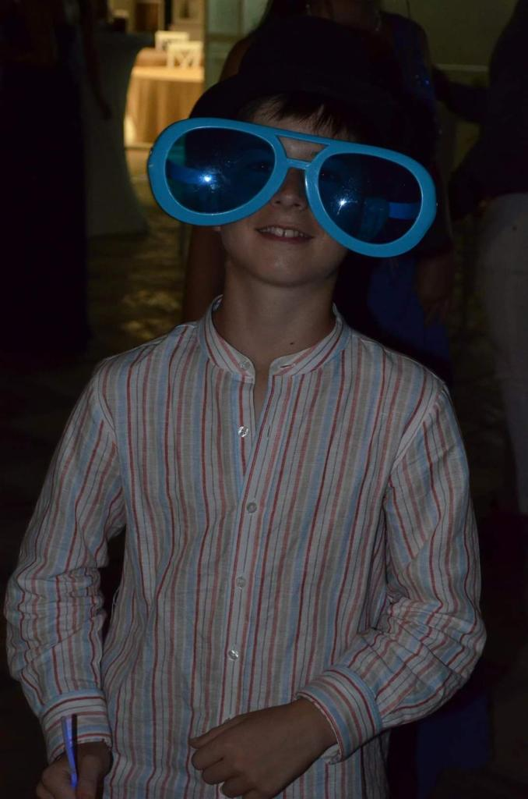

UN POCO

El chico de la izquierda soy yo hace bastantes años, y el chico de la derecha es mi primo Victor. Con él he vivido muchas cosas y es una de las personas mas importantes para mi a día de hoy. Nací en Sevilla ,el 29 de Febrero de 2004, pero practicamente he vivido en Cartaya (Huelva) toda mi vida.
Desde pequeño me han fascinado los animales, y los caballos no son una excepción, a los 6 años aprendí a montar y es una de las mejores sensaciónes que hay.
DE MI
Esta foto es de mi primeros Carnavales en Cartaya. Dale a un niño pequeño un disfraz con una espada y ese chico se lo pasará en grande, en mi caso fue así.

Esta foto es de Navidad en 2014, nunca olvidaré esas Navidades.
PASADO
A día de hoy me considero bastante fiestero y cada vez que veo esta foto pienso que desde pequeño daba señales. Si en ese momento fuese consciente de las fiestas y los festivales a los que iría años después no me lo creeria.

Esta foto es de la boda de mi primo Luis Alberto, fue un gran día, toda la familia unida sin haber ninguna discusión, parecía un milagro, es de las pocas veces que se reunió toda mi familia y no acabó mal. Además mis abuelos salieron de su casa y eso no pasaba desde hacia años. Nunca olvidaré aquel día.